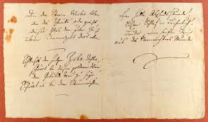

ODA

¿Qué es?
Se denomina oda a una composición poética en verso y al subgénero lírico en el que se enmarca, caracterizados por un tono elevado, casi de canto, y por abordar una temática religiosa, heroica, amorosa o filosófica, que contiene una reflexión del poeta. Su extensión es variable, tanto como su métrica y estructura, que han cambiado junto con la poesía a lo largo de los siglos.
En general se llama oda a cualquier texto poético destinado a ser cantado, ya que inicialmente este género (proveniente de la antigüedad griega) era acompañado con música, y se componía de dos vertientes: coral y monodia, cantada por varias voces o por una sola, respectivamente.
Antiguamente se cantaba con el acompañamiento de un instrumento musical. En la Antigua Grecia donde tiene sus principios, existían dos tipos de odas: las corales y las cantadas por una sola voz (monodia). Píndaro compuso odas a los dioses, héroes y atletas. Las de Alceo de Mitilene celebraban las virtudes militares y a los guerreros; y las de Safo, a los amantes y el amor; Anacreonte se sirvió de ellas para aplaudir los placeres de la mesa y del amor. De la grecorromana Melino sobrevive una oda al Imperio. Entre los latinos se desarrolló un estilo particular, en el que descolló Horacio, basado en una mezcla de los estilos de Anacreonte y Píndaro.

"ODA A LA ALEGRIA"
¡Alegría, hermosa chispa de los dioses
hija del Elíseo!
¡Ebrios de ardor penetramos,
diosa celeste, en tu santuario!
Tu hechizo vuelve a unir
lo que el mundo había separado,
todos los hombres se vuelven hermanos
allí donde se posa tu ala suave.
¡Abrazaos, criaturas innumerables!
¡Que ese beso alcance al mundo entero!
¡Hermanos!, sobre la bóveda estrellada
tiene que vivir un Padre amoroso.
Regresar al Index.